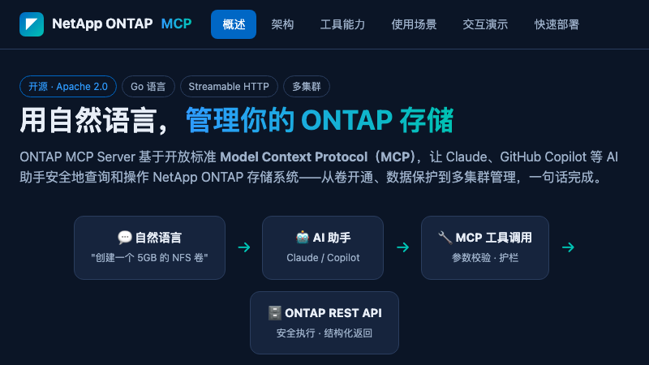
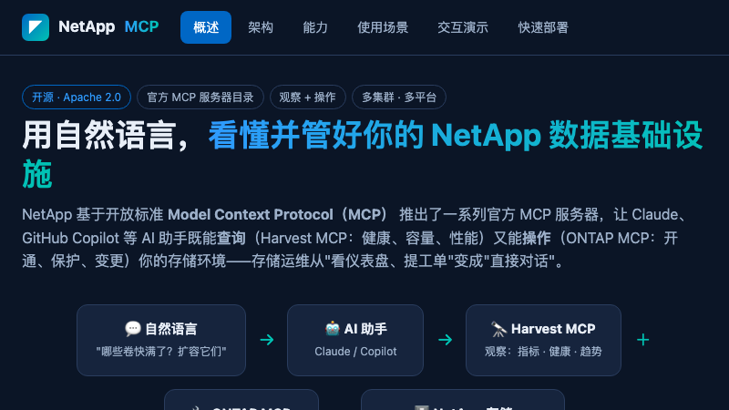

应用与演示
Bay 01 — 06Bay 01在线

NetApp Fusion
Fusion 容量查询
基于 Fusion 历史实测数据，支持精确配置查询、可用容量反查及加密截图查看。
密码登录后进入Bay 02在线

AIDE + AFX
制造业 AI 推理数据平台
交互展示从车间数据、AIDE 编目与检索，到 GPU 推理和产线知识助手的完整数据链路。
进入交互演示Bay 03在线

ONTAP MCP
ONTAP MCP 运维演示
用自然语言完成 ONTAP 卷开通、数据保护与多集群管理，交互展示 AI 到 REST API 的完整调用链路。
进入交互演示Bay 04在线

NetApp MCP
NetApp MCP 全景演示
集中展示 Harvest、ONTAP、DataOps 与 Knowledge MCP，让 AI 看懂并管好 NetApp 数据基础设施。
进入交互演示Bay 05规划中
勒索软件行为检测
ARP 自主防护如何在写入阶段识别异常加密行为。
Bay 06规划中
KV Cache 分层
推理缓存在 GPU 显存与存储之间的分层与命中过程。